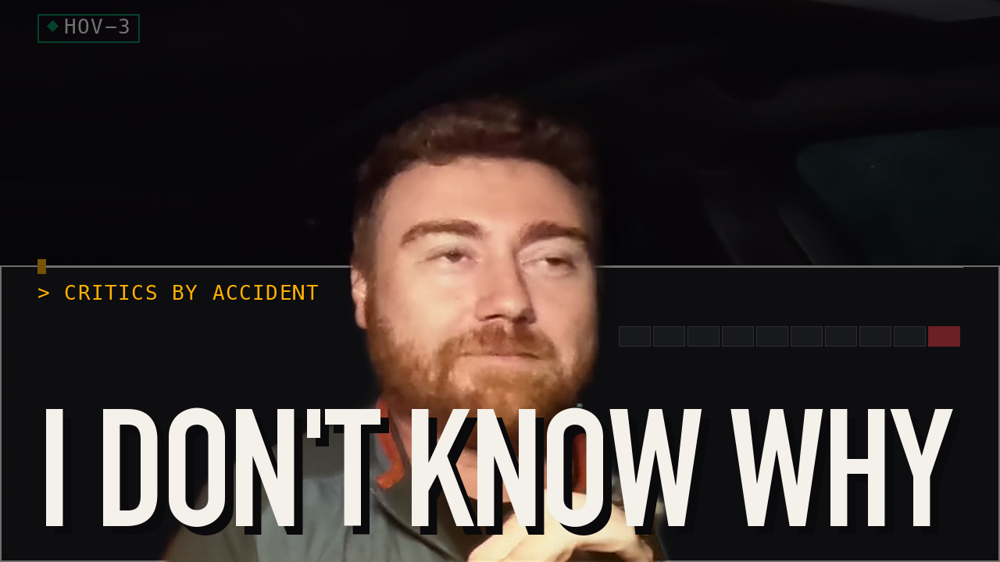

◊ Carpool Critics // EPISODE 4
Ebenezer 2: A Pitch Nobody Asked For | Review

[ PREMIERES ]PREMIERES NOVEMBER 12, 2026 // FULL EPISODE DROPS ON YOUTUBE
Ebenezer (2026): Was there a favorite of your cast members?
◊ BEST MOMENT
“McKellen's voice was very... Yeah, that's true. Ian McKellen had some hard words to understand. And then that scene popped up, and then righ...”
◊ CHAPTERS
- 00:00Show Open
- 00:32Show Intro and the IMDb Premise Read
- 05:45Guessing the Rotten Tomatoes Number, Unearned
- 17:51Spoilers and One Unnecessary Theory
- 28:34Scorecards Nobody Agreed To
◊ PARTIAL TRANSCRIPT
5 raw turn(s) were cut from the master and are not shown. This is the dialogue that survived the edit.
And then we're starting. I've heard critics. I can start us. Okay, welcome back to Carpool Critics. We just got out of a wonderful movie, just to bias everyone, called Ebenezer. This was essentially a take on a Christmas Carol, right? But this time it's a 2026 gothic dark fantasy black comedy thriller directed by Ty West from a screenplay by Nathaniel. Daniel Halpern, based on the 1843 novella, A Christmas Carol by Charles Dickens. The film stars Johnny Depp as Scrooge, Rupert Grint, a .k .a. Ronald Weasley. We got Andrea Risborough, Sam Claffin, Daisy Ridley, Arthur Conti, Ellie Bamber, Henry Lloyd Hughes, Charlie Murphy, Trammell Tillman, and my favorite, Ian McKellen.
and let's end up going to essentially general vibes beforehand right so what did each one of us expect walking into it based only on what you knew if anything okay
oh
I should also introduce us who's this person I'm Alex I'm Dave I'm Shawn Yee otherwise known as Shane. What was your expectations?
I didn't have big expectations. I like Johnny Depp and so that was kind of the extent of I was just thought it'd be a fun take on A Christmas Carol and so not much expectation beyond that?
For me, I didn't see the trailer. All I knew was Johnny Depp was really starring in it. Somebody told me it was a little a dark twist on a Christmas Carol. So that was my expectation. I was thinking more of like a horror twist on Ebenezer because there has been a trend to be more dark and introduce horror elements into two stories we all we all are already know
and in mind I had seen half a trailer and then I stopped myself I had saw a little bit of Johnny Depp acted silly and so I'm like okay there's a little comedy spoof in here I was also expecting because of what I ended up reading which was the dark the dark thriller so I was expecting it's like okay dark comedy maybe they can add a little little spice into the into the mix and so I was primed in sort of a jolly in expecting a little bit of laughs that was my expectations and so walking out of it essentially how did you feel compared to your expectations I
was a little more pleasantly surprised going into I mean this is a start we all We grew up on this story. We all know the plot.
I walked out feeling like Ty West did a phenomenal job. Johnny Depp did a phenomenal job. And it would be a great film for families to go see.
Nice. Go
ahead.
You got it? Me? Okay, coming out of it, not going to lie, I fell asleep during the first little bit of the movie.
Not
to say it was boring, but it was more just I was tired. So I took a nap, and then I woke up, and then I was in the middle of one of the ghost scenes. And so my expectations sort of coming out of it.
So you're unqualified to be here. I am unqualified to be a critic.
I slept through part of the movie. from what I saw in coming out of it I quite I quite enjoyed it compared to my expectations I think it met them which I was able to enjoy it have a couple little laughs in like what comes to mind nowadays is like Johnny Depp Pirates of the Caribbean like his little little shtick I guess I'll put it that way and it hit the marks on the Johnny Depp shtick
yeah I said going into it that is this Jack Black's origin story and I don't know I
really
like the film there were parts that I thought they did really well like some interesting seeing kind of like new takes. There were other parts that I thought were Um, but overall, I just thought it was very entertaining. And I liked that they took, like, kind of a fresh take on a few things without stealing from the story that we all know. So, I thought they pulled that off pretty well. And I liked the cast. The cast was done really well, I think.
Was there a favorite of your cast members? Ian McKellen, by far. Ooh.
Yeah, he was my favorite.
Do you have one? Yeah, Johnny Depp, I mean. granted we all expected him to do exactly what he did but it's still for me hits the mark I
was like yeah Johnny Depp was there but I'm gonna have to call out Rupert Grint aka Ronald Weasley you'll never you'll never not escape that but your performance in this was top -notch I was a big fan and so you know he was a versatile actor okay so going on in the next thing we do have a a continuing thread where we like to try to guess the Rotten Tomatoes critic score as well as audience score. And so it's the tomato meter and the popcorn meter, one of those. And so how we've been doing it in the past is we'll each go around, do our best critics guess, or our tomato meter, what we think it's gonna end up being, reason why, and then we'll go through and give all of our audience. Predicto meter. Predicto meter. Predicto meter, popcorn meter. Well, we're predicting it will be. Predicto meter. We're predicto meter. Okay. Who wants to start us off on our tomato meter? You can. Okay. I think... Here's the difference. I'm a popcorn dude. I think, critic -wise, for some reason, I think they're going to, like, pan this. I don't know why. I just have this weird feeling. Okay. Okay. And so reason being, I don't know, but I think they're going to like pan it at like a 40%, which is going to be the exact opposite of my, my popcorn meter. So I'm going with 40. I can't explain it. My tomato meter.
That's fine. Yeah. Oh, we're only doing tomato right now. Let's go. Let's go tomato. And then we'll go, we'll go pop. For me, I think it's also going going to be pretty low, but I think it'll be around 64%. Not great, but I think the purpose of this film is during a holiday season, would the critics recommend it to go see it with their families and I would say 36 % will say absolutely not do not go see this film but I think 64 % especially if they have young children or around young children they'll they'll see that that this is a positive film to go see yeah
I think I'm I agree with both of you I think I'm leaning more toward a slightly lower or score like Chain because I think when I think of critic scores I think of are the I think of critics as looking for something new and while there were new elements I felt like they were kind of just like features on the side they were kind of like edge case additions rather than like really exploring something deeply new about the story and so I feel like for that they won't necessarily rate it that high. I'll go in the middle. I'll go like 49. Kind of split the difference between the two of your reviews. But I liked it. But I think that the critics won't. Should I go... Yeah,
if you liked it what's your score? Okay, so on... For popcorn... For popcorn... Let's see. I would probably give it a 71. I liked it. It was very enjoyable. It's not my favorite telling of this story. I like the Muppets telling of the story better. It's hard to beat. But I liked it. It was very enjoyable. I think there were elements of it that will stick with me. Ian McKellen's version of Marley was phenomenal. Probably my favorite expression of that character that I've seen. He makes a great ghost. Yeah, so 71. Is that what I said?
Yeah, 71. What were you, Dave?
For me, I'm gonna go that's what I was thinking, low 70s. You know, I would say 73 % to be different than 71. But low 70s was exactly what I was thinking, I think. the audience would again, for the same reason I'm hoping that the critics rate it, is that this is a good film, of course it's a positive.
age range 8 to 14 they would they would totally rate it positively as a family
what are you guys going so low this is gonna be loved it's gonna be absolutely adored. I'm going with 91.
I'm giving
an extra 20.
I like the bold spread of 40 to 90. 40 to 90,
right? Reason being, it is I feel like it's going to be marketed as a darker children's movie. I do feel that. Even though I think some parts of it are way too dark. and so parents are gonna bring children here and the children get scarred depends on your child um one of those but i i think this will be a great like going into the holiday movie it's interesting that they're releasing it in november yeah
than somebody's christmas somebody
messed something up there well well it's usually they come out during christmas uh thanksgiving
time so is that right i guess that makes sense and i guess if they're trying to do like a month month -long movie right for sure because I think this comes out on the 13th or something like that this
weekend yes
yeah
or something like the 13th so if they get a full run I mean like if they give a month in the theaters I guess it would hit all the way there but anywho yeah
that makes sense so
going over the scores just to make sure I get this on uh the little scorecard um for critics we We have Shane at 40, Alex over here at 49, Dave at 64, for that would be the tomato meter, and then for the audience score, the popcorn meter, we have Shane at 91, Alex at 71, and then Dave at 73.
And just for background, today is the 9th of November, so by the time this comes out, maybe the 12th, possibly. So, yes, we are seeing the film before it's officially released.
yep yep yep yep and so um sort of the uh who would you recommend it to i talked a little bit about this but um i would recommend it to a child or a family who has a kid that's slightly older i'm trying to think of like when i would i don't know i feel like if the kid's like nine or ten I feel like you just have to be a little older. I feel like there's kids who are too young. Oh, I think under
eight. I think under eight it would be too young. Over eight. They would actually like some of the elements. Some of the scary elements.
Yeah, anyone who likes zombie and ghost flicks. Anyone who likes... Goosebumps, I mean. Goosebumps. Anyone who likes a Christmas story slightly darker. that's who it is it's a
very niche market yeah
very niche Christmas story market you have any recommendations Dave
yeah I already alluded to this eight children families with kids over the age of eight I think especially for me when I was at age range I would have felt oh this is cool there's like elements of scary elements that I would have thought was interesting and cool and felt lucky to go see as a younger kid. I think if it's too young, you know, maybe not go see this film. It's a very different story than The Muppets, Christmas Carol. girl um but yeah
it's hard to not to say the same thing as y 'all but um i yeah i would just say i agree with their thoughts i would say yeah if you're looking for a good excuse to go to the theater for a christmas film this is a good one that's safe for most of the family and i think just a good excuse to go see a movie so i don't have like a specific audience in mind but yeah good family film a little darker family film i'm like that's what that's what i was thinking it's like it's like i recommend seeing with your kids but it's yes there's light elements of horror light elements of horror yeah if your
family likes horror that's why that's why
it's it's not like well some
elements of like
yeah there's some elements of like gore even um yeah uh Yeah, some of the visuals could be very jarring. Yeah,
going back and forth with the recommendations. Bring your kids! No, but I think... But don't! If they scare you easily, bring them. I think if they're over eight, you know what I mean? Like, there's not... Yeah, yeah, yeah. Like Corpse Bride. Nightmare Before Christmas. That was also elements of horror too. Yeah, yeah, yeah. I would say even... Yeah, yeah, if
your kid can watch like a bunch of Tim Burton stuff, Corpse Bride, all that, I feel like you could... It's in that category. Yeah, you can bring him, but instead of claymation, it'll be real.
Yeah. I think that's the best way to put it. Okay. And then, uh, I'm not sure if we want to keep with this, but I like it. It's like would you end up going to pay full price for this or this like a Tuesday discount movie? You pay full price for it, or would you wait for it out on? Theaters or out in them out on the TV. I
would say for me. It's the word it's worth the price of admission only because I feel like I Really appreciated how the movie was shot It almost felt like it was on film and at least like the first half of it It had a very very 90s feel towards a lot of the graininess of the film. And seeing it on the big screen, it was very nostalgic to see if, like, what would it have been like to go see Home Alone in the theaters, right, back in the 90s. I think some of the shots were very well fit for a large cinematic screen. The The film a lot of the film had elements of a play I think a lot the set designs were very play like And seeing that on the big screen kind of puts you in the audience of a play
Yeah, yeah Okay
I'm hit or miss on this. It's like you can go see it in the movie But you can also you can wait for streaming me reason being I think this would be yeah I really think you can go either way I think you would enjoy it taking a nap in the theater I mean don't do that I think you can enjoy it for what it is which is like a generic Christmas story turned horror but I think I feel like you could wait for streaming on this one yeah
yeah i'm i'm team like if you love having an excuse to go to the theater i think yeah i think this is a good reason to go but i also i don't think you're missing that much if you just want to watch it at home like um i think this is a good just kind of like throw it on the tv watch it put in the background of a christmas party or something like that too
that's where I differ I would say full attention yeah oh interesting I would do half asleep
with one eye open
I like half asleep just make sure to sleep through the first like 15 of it and then full attention I
don't know because like I feel like um this is one of the first films Christmas films out so if you want you to set the mood as a family like oh Christmas season is upon upon us, I think it would be worth the price of the mission to put everyone in the spirit versus, you know, one of the millions of movies they could watch at home.
Yeah. Good. Cool. Okay. Spoiler warning. Boop, boop, boop, boop, boop, boop, boop. Spoiler warning. We're going to end up going to that. We are at somewhere, we're at about 18 minutes. So let's keep this relatively close to that, like 10 -ish minutes. Cool. Somewhere around there. and so we can go through my questions but so
if we're not this is you're talking to us right now
yeah okay hey I'm talking to you but we're reading off a script right here for some questions and things and so one of the questions that I have that we'll start talking about spoiling is is there basically a point in the movie where Johnny Depp, there's a classic Scrooge story. Did you go in cheering for him or anything beforehand? Or was there a point outside of the typical where he won you over?
Like I'm rooting for his character?
Yeah, because the question is right here, it's like how did Ty West handle the tone of Ebenezer? and so it's like the the how did he handle the story and in the typical fashion of after he sees the the big dude who points that dude goes to Christmas future or something like that you're supposed to start rooting for him because he's changed was there any point in this movie where you felt differently about that
No. I think the film was very intentional as to when we were supposed to start rooting for him. He was clearly shooken up by the Ghost of Christmas feature. And you could see a lot of his empathy showing up. Even saying, hey, you know, I'll buy you a goose. or he took off his coat and put it around the Christmas feature, you can tell that he was being remorseful, he felt regretful, and started to also be empathetic. So I think the film was very intentional as to when we were supposed to start rooting for him.
Whereas I felt like it started earlier than normal. because does he it's like in the past or it goes to christmas past you start to see him tear up and you start to see him change a lot earlier and so to me they broaden scrooge's we'll call him emotional bandwidth a lot earlier true and so i felt like i'm like oh wow they're getting him early like there was a point in the movie yeah where he was I'm trying to remember it's like where I saw the tear exactly he was he was basically with his ex no well there's no as a sister oh it was a sister yeah when there were kids in the beginning in that part where he was like this is too much for me and so you started to see him becoming emotional and so I'm like whoa whoa, okay, I can actually start tagging on to the empathy in his character. Outside of like the little humorous laughs every now and then we got in the beginning.
Yeah.
Some of the funny moments. And so it's like, okay, let's see where they take it.
Yeah, yeah. When did I start? I didn't really think about it in that context. but I did really like that... how to put it... I... I feel like I liked his interactions with Marley pretty early on. I feel like a lot of tellings of the story, you don't get to see his relationship with Marley, and it's kind of like it's you're already in the like the time after he's passed away and so i feel like you get to know a little bit more about the character of ebenezer because you see him interact with marley a little bit
and
i liked that element of the character was just like just a few more minutes of character development that usually doesn't appear in these films these portrayals of the story um but yeah that's not really an answer to your question but i don't know if i have a good answer to your questions about me well
it might have been a bad question it's more it's yeah it's like when did you start connecting with him because it's the the difference in this there's going to be changes to the movie and so on that note is there like a big change that you really enjoyed in in thanks to ty west versus ty west version of this story versus what we're used to scene yeah
i would say that was the most profound one was how they opened the film
so you thought oh here's a man who was capable of holding a friendship whereas usually we portray the beginning of the story portrays him as the scrooge he ended up being
yeah Yeah, you, I think you see a lot, you see, you see him kind of mirroring the actions of his partner. Like, it's not like one of them was, like, they both were very selfish people, but you also, you kind of see Ebenezer. I saw, like, him almost mirroring what his colleague was. Like, he would, like, see him laugh, he would laugh. Like, at least that's how I saw it. It's like, he's, like, trying to impress his partner. He was looking for
approval. Yeah,
and so you kind of see a more vulnerable, not just purely like thinking of himself person. There's like some amount of vulnerability in his partnership, which I thought was kind of an interesting take that you don't normally see. Very
story -driven, yeah. Anything for you, Dave? Well,
when you rephrase the question, I mean, I pretty much connected when he went back because the first stories of in his Christmas past, I mean, here's a bullied kid, right? Here's a kid who was his parents. You can't help but empathize with his past. So did Ty West do anything differently? differently.
Probably because they wanted to be in play up the romance part of a Hollywood film. So I think he handled that beautifully too even at the end. But
yeah, that's it. Yeah, mine was I absolutely loved the way they changed the ending.
that
was like uh in the sense that they didn't have him screaming at the kid to go buy a goose for him
it was
like him going out to get the goose rather than using his money and so it's like he changed he went to make the effort him talking with his his nephew and doing that and how they resolved it's like very creepily the bob cratchit like scene of him staring into the window Oh, yeah. You know that. And they did a good job of wrapping it up rather than just giving him rays.
Yeah, that kid will have nightmares
after that. Tiny Tim's going to be going to sleep being like, Is Mr. Scrooge in the window again?
But it's like they wrapped it up of just being, rather than Scrooge and Marley's, it's Scrooge and Cratchit. And so it was just a very well -rounded ending of him making the change.
Oh, for sure. I feel like the ending of the film, they've... Out of the ones that... The Christmas Carol films that I remember and recall, they dedicated more time to his turnaround more than any other film. Would you agree?
Yeah.
We saw more of his life post... You know, during Christmas. I think there was more time spent on that arc than any other film. I kind of felt good. Yeah, well -rounded ending. Yeah, because usually it almost felt so abrupt. Like, oh, he's immediately changed and he throws money around and blah, blah, blah.
Yeah. All right, so I want to know, what was y 'all's favorite part of the film? It doesn't have to be like a scene, but like favorite aspect. And what was a part that you would do without? Or thought was like, didn't help the plot?
For me, it was when the, it was a Christmas present. When Christmas present dies. And Johnny Depp just says, he says, what? What? That was so funny to me. So that was a favorite part? Favorite part, for sure.
And
that's what, that's why Johnny Depp is so great. He can make any scene just stand out. The worst part of the film...
There was no worst part.
I think some elements of the horror was a little too much because that one made me hesitant for it being a family film. But at the same time, I guess Ty West wanted it to be a little different. so it was very necessary to include those parts. Another thing that I didn't like is the dialect. It was very hard in the opening scenes to understand what they were saying. I don't know if anyone else felt that. You couldn't make out every single word that they were saying. Could you?
Well, you were asleep. Yeah, that was my favorite part of the movie in the beginning. They had flashed on screen nap break, and so everyone took a 15 minute nap. Yeah, I didn't really have the hardest time. Yeah, me neither. It seemed alright to me, but uh...
Yeah, I But I felt like it was almost intentional, cause the gravedigger, he was... Oh, that was a joke. No, I know, but I almost felt like up until that point, a lot of Ian's words were also mumble jumble. Oh, yeah, Ian
McKellen's voice was very... Yeah, that's true. Ian McKellen had some hard words to understand.
And then that scene popped up, and then right after that, the dialogue became a little more clear. Although, when he was a ghost, it was also... Some of his words were hard to make out.
We have about a minute left. Okay, really quickly. You want to wrap us?
Yeah, let's wrap it up. It'll be one of those. One out of ten, what's your final score it's the tachometer I'll come up with better name at some point
I would give it a six point eight six point eight Good. Kind of. So -so. Okay.
I would give it a 6 .3, which is interesting because I rated the film a little bit higher
than
you did. But, yeah, I would give it a 6 .3.
If you take a nap in the beginning, you're going to end up at, it's not a 9 .2 of a movie, but I'm going to give it, you said 8 .3, I'm like an 8 .8.
Wow.
Yeah. Yeah. To me, it's a great... I'm a Christmas movie dude. And so, if you like Christmas movies, 8 .8. Yeah.
Great.
Congrats. Do you want
to sing us out Silent Night? Yeah.
Silent Night. There's a lot of silent in this movie. Holy Night. Holy Night. Holy Night. I don't know the words. I can't hit that note.